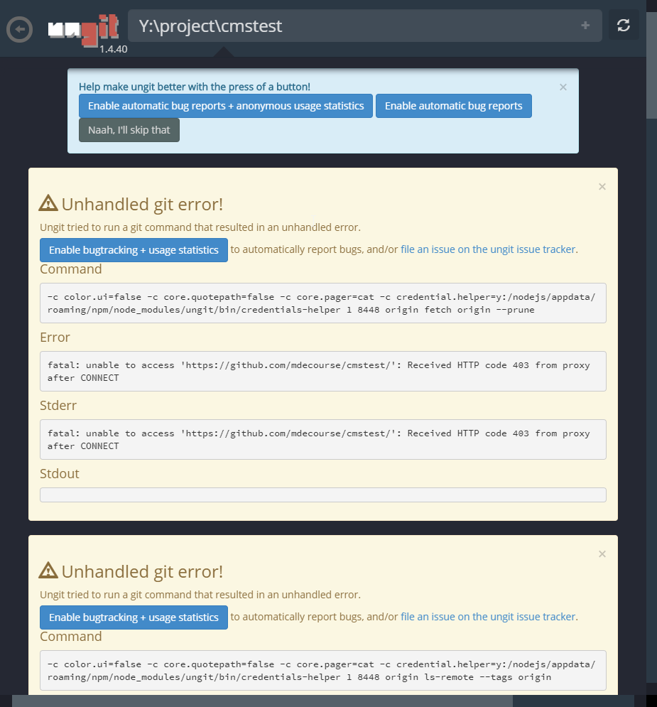
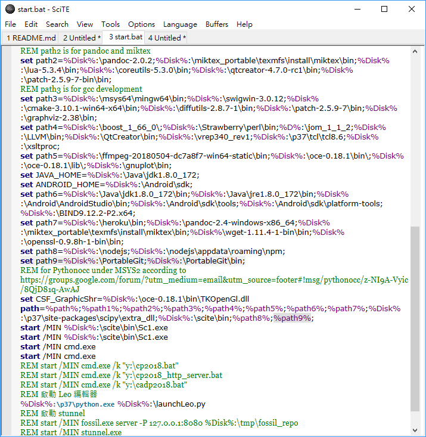

Week3 <<
Previous Next >> Week5
Week4
在配置好的 ungit 的環境下，利用 ssh 與 private key 對 Github 倉儲提交推送。
01：
- clone 位址：git@github.com:mdekmol/cd2019b-task1-2019cdb_t1_g2.git
- (cmd視窗執行)Y:/cd project/cd cmstest/python wsgi.py 進入將 cmstest clone 的檔案位址
- https://localhost：9443 進入測試網站
- 進行改版( save → generate_page )
- Q：同步推送的位址會在哪裡？
近端ungit更新後可以就近端圖像檢視其版本序列所在分支，若權限有取得可行遠端推送，所推送對應的倉儲為 mdecourse。
- Q：怎麼曉得更新的位址在哪？
由當初 git clone 的倉儲即是。
02： .config (由 SciTE 開啟後內容)
[user]
name = 學號
→予以使用者判讀，未有系統功能
email = 學號@nfu.edu..tw
→予以系統行身分確認，使用者須改為自己對應此系統的 gmail
[http]
proxy = http://140.130.17.42:3128
→為指定連線 proxy，使用者若未在執行裝置上指定(該) proxy，系統會自行抓取該裝置之連線位址
03：
- (cmd視窗執行)Y:/cd project/cd cmstest/kungit
- Google chrome 彈出視窗出現 error 訊息：
fatal: unable to access 'https://github.com/mdecourse/cmstest/': Received HTTP code 403 from proxy after CONNECT
- 進入Google chrome ungit 彈出視窗，Erroe 警告內文仍可檢視先前版本編輯，發現先前版本新增者為 Scrum，並且編輯紀錄為 5 days ago(且為上週課堂操作示範改版內容)。
- Q：言下之意我判斷之前在此所更新的該 cmstest 和示範教材為同一個版本序列，遂若我端逕自更新成立會覆蓋教材，且連同 https://github.com/mdecourse/cmstest.git 位址也將被覆蓋？

- →為"沒有執行權限"該狀況因為 cmstest 是由 mdeocurse 進行 clone，所對應的倉儲並未擁有編輯權限，遂在過去的編輯仍可以在"近端" ungit 進行檢視，但無法推送至遠端 github
詳見： https://github.com/mdekmol/cd2019b-task1-2019cdb_t1_g2/wiki
04：
根據 https://www.youtube.com/watch?v=t4PslV5Abjs
說明如何利用 ssh 與 private key 對 Github 倉儲提交推送，直接執行 git push指令行推送，不需要重複身分驗證。
原先建立的 Y : \ 目錄下並沒有 PortableGit 資料夾，遂無法建立對應路徑。於是逕自下載 PortableGit-2.21.0 版本，並設定 path 路徑。
PortableGit-2.21.0下載連結： https://git-scm.com/download/win
- set path9=%Disk%:\PortableGit;%Disk%:\PortableGit\bin;
- 在 path 後加上 %path%

實際操作:
國立虎尾科技大學 機械設計工程系 40423217 利用 ssh 與 private key 對 Github 倉儲提交推送 V3畫質提升
Week3 <<
Previous Next >> Week5